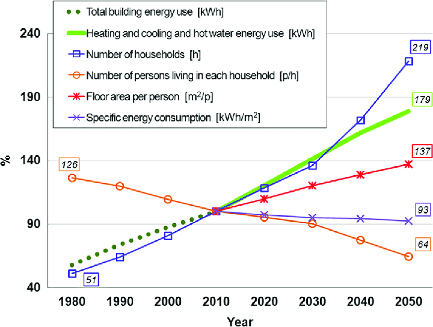
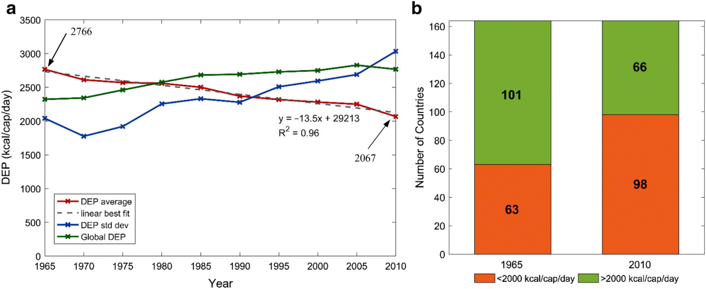

3.1 Holistic Knowledge on Electricity Usage
This project aims to provide a comprehensive understanding of electricity usage patterns by analyzing historical and current consumption data. The analysis will uncover key trends in energy demand, efficiency, and their impacts on resources and emissions. Such insights will be invaluable for shaping energy policies and raising awareness about responsible electricity use among global audiences.
3.2 Innovation of Mitigation Strategies
The work plan is dedicated to developing scalable solutions that can effectively optimize electricity usage and reduce environmental impact. By promoting renewable energy sources, advancing energy-efficient technologies, and improving urban power management, we can contribute to global sustainability goals. These strategies will also be designed for adaptability, ensuring that different regions can implement them according to local needs and resources.
3.3 Empirical Analysis-Based Policy Recommendations
The findings of this project will be used to create data-driven policy recommendations for governments, NGOs, and industries. Key recommendations will focus on energy efficiency standards, incentives for renewable energy adoption, and regulatory frameworks that support sustainable electricity usage. Such policies will encourage responsible energy practices across sectors, contributing to global efforts for a more sustainable and energy-efficient future.
3.4 Future Research Base
One of the project's key goals is to identify gaps in current knowledge and set a foundation for future research on electricity usage. Areas for further investigation may include the socio-economic impacts of energy access, innovative smart grid technologies, and advancements in energy storage solutions using artificial intelligence. By outlining these research needs, we can guide future efforts to optimize electricity usage and promote sustainable energy practices more effectively.